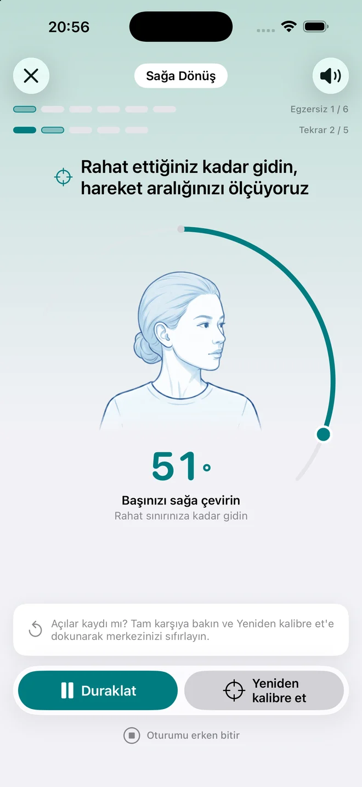
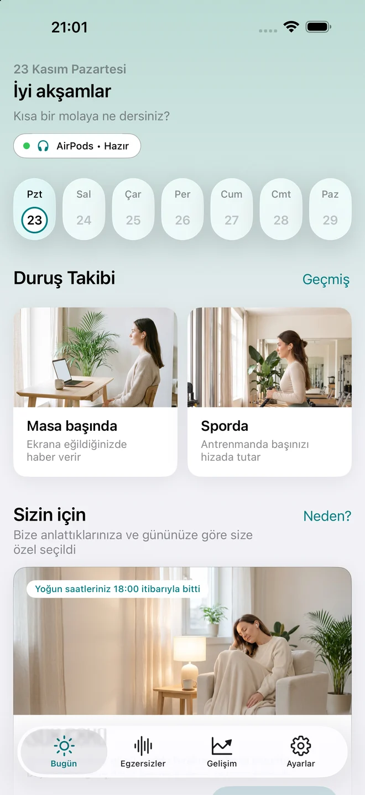
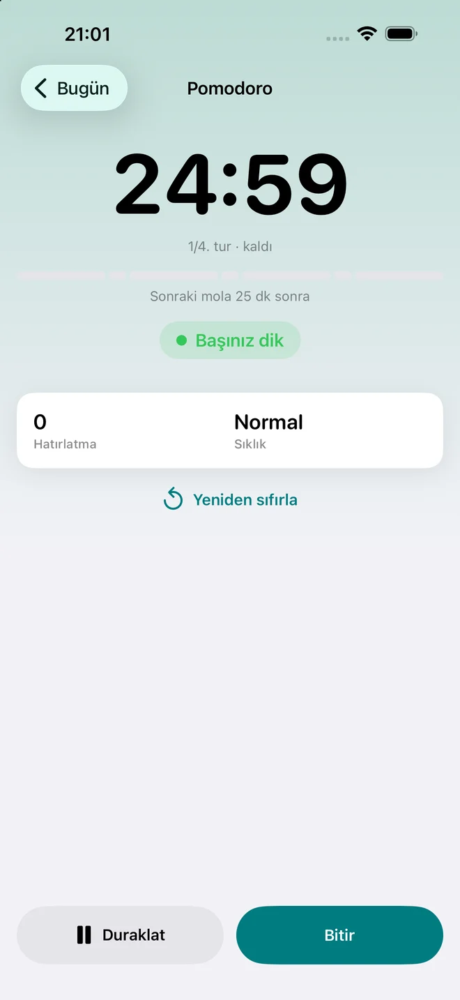

Boyun
Sağa ve sola dönüş, yana eğme, aşağı ve yukarı bakış, çene içe çekme. AirPods açıyı ölçer, tekrarları sayar; AirPods yoksa Nodly süreyle yönlendirir.
Boyun, nefes, göz, el ve bacaklar için kısa egzersizler ve masa başı yoga. Nodly, AirPods'unuzla boyun hareketlerinizi ölçer, duruşunuzu takip eder ve başınız uzun süre önde kalınca nazikçe haber verir.
App Store'dan indiriniPhone ve iPad için · Uyumlu AirPods ile, ya da onlarsız

Yalnızca boyun değil
Sağa ve sola dönüş, yana eğme, aşağı ve yukarı bakış, çene içe çekme. AirPods açıyı ölçer, tekrarları sayar; AirPods yoksa Nodly süreyle yönlendirir.

Uzun nefes verme, kutu nefesi ve dengeli nefes. Bir çizim ve hafif bir titreşim eşliğinde 1, 2 ya da 3 dakika.

Ekrandan uzaklaştıran iki dakikalık mola: uzağa bakın, yavaşça kırpın, ardından gözleriniz kapalı dinlenin.

Bilek esnetme, bilek çevirme, yumruk açıp kapama. Klavye ve fareyle geçen günler için.

Parmak ucunda yükselme, ayak ucu kaldırma, diz uzatma ve oturarak adım. Sandalyenizden kalkmadan.

Oturarak kedi-inek, yana eğilme ve burgu; toplantı aralarında gevşemek için omuz hareketleri.
Yalnızca boyun takibi AirPods kullanır. Diğer tüm egzersizler onlarsız çalışır.
AirPods ile ölçüm
Kulaklığınızın hareket sensörleri başınızın açısını izler. Hedef aralığa ulaştığınızda Nodly sesle ve titreşimle haber verir, tekrarı sizin yerinize sayar. Hedefler sizin hareket açıklığınıza göre ayarlanır.
Nodly kulaklığın hareket sensörlerini kullanır. Kamera ya da ek bir cihaz gerekmez.
Tam karşıya bakın ve birkaç saniye sabit durun. Nodly bu duruşu 0° olarak alır.
Hedef aralığa geldiğinizde Nodly sesle ve titreşimle haber verir, tekrarı sizin yerinize sayar.
0°
Sağ
Yeşil aralığa gelene kadar sağa sürükleyin, ardından merkeze dönün.
Tekrar: 0


Duruş Takibi
Çalışırken başınızı 30 dakikadan 2 saate kadar ya da 25 dakika çalışma, 5 dakika moladan oluşan Pomodoro turlarıyla takip eder.
Ayakta yaptığınız hareketlerde başınız düşerse saniyeler içinde uyarır. Yatarak yaptığınız hareketlerde duraklatmanız yeterli.
Telefonu kilitleyip çalışmaya devam edin. Kalan süreyi kilit ekranında görür, oradan duraklatır ya da bitirirsiniz.
Siri ile, Denetim Merkezi'nden ya da Kestirmeler'de kuracağınız bir Odak modu otomasyonuyla.
“Nodly ile duruş takibini başlat”
Rutinler
Güne Açılış ya da Ekran Molası gibi hazır bir rutinle başlayın veya kütüphaneden hareketleri seçip kendi sıranızı kurun. Bugün ekranındaki Sizin için bölümü, gününüze ve yoğun saatlerinize uygun bir rutin önerir.
İlerleme
Seri günleriniz, haftanız ve zamanınızın boyun, nefes, göz, el ve bacaklar arasında nasıl dağıldığı tek bakışta. Pratik yaptıkça küçük bir 3B masa da kendiliğinden toparlanır.
Ayrıntılar
Geçmişiniz ve rutinleriniz kendi iCloud hesabınız üzerinden iPhone ve iPad'iniz arasında eşitlenir.
Boyun egzersizleri süreyle de yapılabilir. Diğer egzersizler için AirPods hiç gerekmez.
Günlük hatırlatma, yoğun saatlerinizde masa başı molası ve haftalık özet; her biri isteğe bağlı.
Sesli yönlendirme, sesler ve titreşimler eşlik eder; gözleriniz ekrandan uzak kalabilir.
iPhone ve iPad'de büyük yazı boyutları, VoiceOver ve Hareketi Azalt desteği.
Türkçe, İngilizce, Almanca, İspanyolca, Fransızca ve Japonca.
Gizlilik ve güven
Hareket verisi telefonunuzda işlenir ve ham hareket kaydı tutulmaz. Hesap açmanız gerekmez.
Hareketler yavaş ve rahat olmalı. Bir şey ters gelirse hemen durun; Nodly sizi asla zorlamaz.
Nodly bir wellness uygulamasıdır; hiçbir rahatsızlığı teşhis etmez ya da tedavi etmez. Boynunuzla ilgili bir rahatsızlığınız varsa önce bir sağlık profesyoneline danışın.
Yasal
Hesap yok, hareket verileriniz cihazınızdan çıkmaz. Anonim kullanım istatistiklerini yalnızca izin verirseniz toplarız. Reklam, takip ve veri satışı yok.
Tamamını okuyunNodly aylık ya da yıllık abonelikle sunulur; uygun kullanıcılara 7 gün ücretsiz deneme vardır. Aboneliğinizi App Store hesap ayarlarınızdan istediğiniz zaman iptal edebilirsiniz.
Tamamını okuyunHareketleri yavaş ve yalnızca rahat hissettiğiniz aralıkta yapın. Ağrı, baş dönmesi ya da uyuşma hissederseniz hemen durun.
Tamamını okuyun